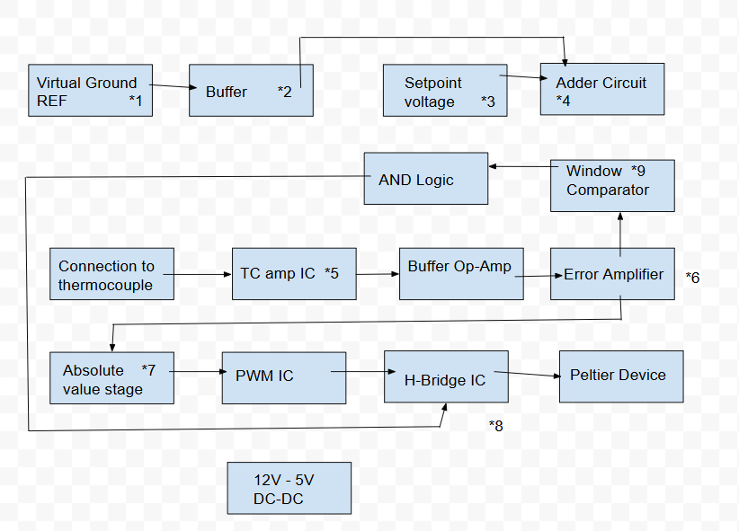

A VCXO running at 27.2 MHz to drive a linear accelerator was outputting incorrect frequencies when the temperature of the system varied. This caused the resonators in the linac to not operate at resonance.
Design a circuit board that takes in a setpoint voltage and outputs a bidirectional current using a PWM signal to drive a Peltier (heating/cooling) device.

A voltage divider with 0.01% tolerance creates a precise 2.5V virtual ground that doubles as a reference voltage. Needed because the op-amps run off 5V and GND, so I needed my own zero-error point.
A simple op-amp buffer ensures zero output resistance. Left as a bare voltage divider, the next stage would pull current and drop the voltage. The buffer uses its own feedback to supply more current whenever its (−) and (+) terminals differ.
A setpoint voltage is provided by the user. 0–10V can be supplied, which uses another resistor divider and buffer stage to map the setpoint down to a 0–0.2V range.
The 0–0.2V is added to the 2.5V reference to make the final setpoint voltage that gets compared against the sensor reading.
Circuitry from the datasheet was used to design this stage. It's also biased using the 2.5V reference, so if that voltage is off at all, the temperature reading is off by the same amount.
This is where the error signal is generated. The setpoint voltage is subtracted from the thermocouple sensor readback, then the difference is amplified 10x so the later stages need less precision.
Needed because the PWM should be proportional to the absolute value of the error from the setpoint. If the VCXO is 5°C too hot or too cold, the drive should be the same either way.
Configured directly from datasheets and simulated using SPICE models.
A dual comparator IC decides the direction of the H-bridge and whether it's on at all. Above a certain error, one comparator turns on, and vice versa. Between them is a window where both are high, which drives an AND gate that disables the H-bridge — the VCXO is in spec, and no more energy goes into the Peltier device until it leaves that range.
I simulated every stage of the circuit in LTspice and then built it on a breadboard. After verifying each stage, I moved to a soldered breadboard to ensure strong connections. To test the entire system, I thermally pasted a Peltier device and a thermocouple to the VCXO. I also thermally pasted a second VCXO so I could measure setpoint vs. output. After logging data and confirming repeatability, I moved on to the schematic.
I used Altium Designer to design a schematic and moved into board layout. As I was running out of time in my internship, I did an unofficial practice layout, but wasn't able to design a board for development before the internship ended.